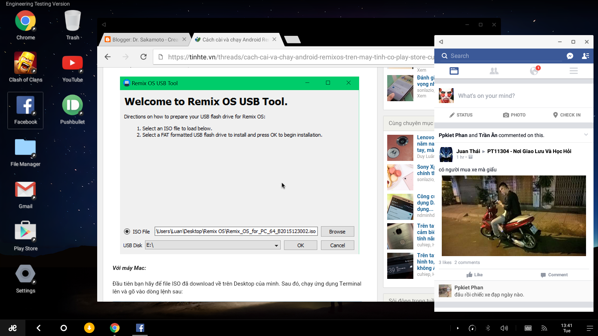

Hôm nay mình có đọc một bài trên Tinhte.vn nói về
Cách cài và chay RemixOS trên máy tính. Đây là hệ điều hành từng được nhiều người đánh giá là rất tốt cho tablet Android vì nó cho phép đa nhiệm nhiều cửa sổ và giao diện đẹp không khác gì các hệ điều hành máy tính như Windows hay Mac OS. Lúc trước mình cũng có quan tâm đến RemixOS nhưng lúc đó chỉ có cho một vài tablet Android. Nhưng hiện nay RemixOS đã hợp tác với Android x86 để port RemixOS lên các máy tính chạy chip Intel hay AMD.
I. Chuẩn bị:
- USB 2.0 hoặc 3.0 (khuyến khích máy có cổng USB 3.0 cùng USB 3.0 để đạt tốc độ cao nhất)
- File ISO RemixOS (FShare, Torrent)
- Tool cài RemixOS vào USB (Windows) (FShare, Mirror)
- Máy tính có chuột, bàn phím, mạng Wi-Fi
II. Thực hiện:
B1: Format USB định dạng FAT32.
B2:
Đối với Windows:
Bạn chỉ cần chạy
remixos-usb-tool.exe. Trong dòng
ISO File, nhấn
Broswe để chỉ đường dẫn file ISO của RemixOS. Trong
USB Disk, chọn USB bạn đang sử dụng, nhấn
OK. Phần mềm sẽ tự động ghi file ISO vào USB. Chờ khoảng vài phút để quá trình ghi hoàn tất. Nếu bạn muốn sử dụng ngay RemixOS thì nhấn
Restart Now. (Lưu ý bạn phải setup BIOS để USB được boot đầu tiên)
Đối với Mac:
Sau khi download RemixOS, bạn chuyển file ISO vào Desktop, sau đó gõ lệnh trên Terminal như sau:
hdiutil convert -format UDRW -o Desktop/RemixISO.img Desktop/RemixISO.iso
Sau đó gõ tiếp lệnh:
diskutil list
Trong cửa sổ Terminal lúc này sẽ xuất hiện danh sách các ổ đĩa đang được kết nối với máy tính. Tìm đúng ổ USB của bạn, sẽ thấy chữ disk
X với chữ là một số bất kì tương ứng với từng máy.
Gõ lệnh này để giúp USB của chúng ta có khả năng boot, nhớ thay chữ X bằng số ứng với ổ USB của bạn:
diskutil unmountDisk /dev/diskX
sudo dd if=Desktop/RemixISO.img
of=/dev/rdiskX bs=1m
diskutil eject /dev/diskX
Trong Mac, các bạn boot bằng USB bằng cách khởi động lại máy, khi khởi động lên thì nhấn giữ phím
option.
III. Một số trải nghiệm:
Lúc mới boot vào sẽ có 2 tuỳ chọn, một là Guest Mode (không lưu dữ liệu, khi khởi động lại vào RemixOS sẽ trở về thiết lập ban đầu, không khác các hệ điều hành Linux chạy Live CD hay Live USB), hai là Resident Mode (lưu toàn bộ dữ liệu của bạn)
Khi chọn xong thì máy sẽ thiết lập như boot vào kernel, tạo phân vùng (bước tạo phân vùng khá lâu, tuỳ thuộc vào tốc độ USB hay máy tính) . Phân vùng tạo tối đa là 4GB.
Khi vào được RemixOS qua các thiết lập cơ bản như chọn ngôn ngữ, Wi-Fi. Thì giao diện RemixOS xuất hiện, giao diện rât thân thuộc với các icon ứng dụng, file manager,.... Giao diện app drawer (nút dưới cùng bên trái) khá giống với Chrome OS.
RemixOS có đầy đủ Google Service và Play Store nên các bạn có thể tải về các game, ứng dụng,...
RemixOS được chạy trên nền tảng Android Lollipop 5.1.1. Dù vậy mình cảm thấy RemixOS chạy khá nặng (so với các hệ điều hành nhân Linux) App chạy tốt, tuy nhiên đôi khi bị văng hay không phản hồi (USB 3.0 trong khi máy chỉ có cổng USB 2.0)
Mình xem RemixOS là một Windows 10 trong thế giới Android vì khả năng đa nhiệm nhiều cửa sổ. Làm việc văn phòng hay lướt web, fb trên RemixOS rất sướng.

Tuy nhiên xài chuột khá khó khăn, nhất là khi cuộn, cuộc một nấc nhưng trang cứ cuộc rất dài, vào Setting không có tinh chỉnh để giảm cuộn chuột. Tốt nhất là xài Touchpad, tuy nhiên Touchpad lại giống kiểu cuộn kiểu tự nhiên của OSX (cuộn ngược với Windows) nhưng lại giống thao tác cuộn cảm ứng trên smartphone. Thao tác với con trỏ khá khó, nhất là bôi đen dòng, bạn phải làm giống Android (nhấn giữ một chữ, kéo 2 con trỏ định hướng đến kí tự bạn mong muốn) hoặc đưa con trỏ vào từ hay đoạn muốn bô đen và dùng Shift + các phím mũi tên.
Với Chrome, một số thao tác với đường link hay hình ảnh giống như Android (nhấn giữ để ra menu) không dùng được phải chuột.
Gõ tiếng Việt thì chắc chắn phải cài Laban Key. Laban Key gõ rất tốt trên laptop.
IV. Kết:
RemixOS là một sự lựa chọn hoàn hảo cho việc chạy Android thật sự trên máy tính. Cài cả app và Play Store. Dù dung lượng bộ nhớ tạo ra có 4GB nhưng vẫn có thể cài được các app nhẹ nhàng như Facebook hay ZingMP3. Hi vọng hệ điều hành này sẽ phát triển hơn và sẽ cho phép cài đặt trên máy thật. Lúc đó RemixOS mới có thể phát huy hết sức mạnh của máy tính và Android.


.png)


.png)
{kind=link}